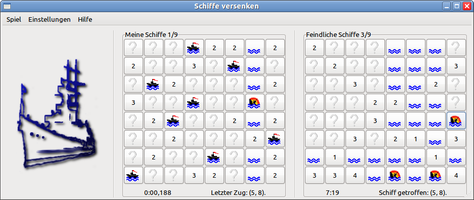

Battleship
Dieser Artikel wurde für die folgenden Ubuntu-Versionen getestet:
Dieser Artikel ist größtenteils für alle Ubuntu-Versionen gültig.
Zum Verständnis dieses Artikels sind folgende Seiten hilfreich:
Bei Battleship handelt es sich um ein erweitertes Schiffe versenken Spiel.
Man kämpft gegen den Rechner oder einen menschlichen Gegner und Sieger ist, wer zuerst alle gegnerischen Schiffe entdeckt hat. Anstatt blind zu feuern erhält man bei jedem Schuss, der kein Treffer ist, als Information die Gesamtanzahl von generischen Schiffen in der betreffenden Zeile und Spalte.
|  |
| Battleship |
Installation¶
Das Paket kann aus einem "Personal Package Archiv" (PPA) [1] installiert werden.
Adresszeile zum Hinzufügen des PPAs:
ppa:finteis/battleship
Hinweis!
Zusätzliche Fremdquellen können das System gefährden.
Ein PPA unterstützt nicht zwangsläufig alle Ubuntu-Versionen. Weitere Informationen sind der  PPA-Beschreibung des Eigentümers/Teams finteis zu entnehmen.
PPA-Beschreibung des Eigentümers/Teams finteis zu entnehmen.
Damit Pakete aus dem PPA genutzt werden können, müssen die Paketquellen neu eingelesen werden.
Nach dem Aktualisieren der Paketquellen muss folgendes Paket installiert [2] werden:
battleship (ppa)
 mit apturl
mit apturl
Paketliste zum Kopieren:
sudo apt-get install battleship
sudo aptitude install battleship
Das Programm kann dann sofort aus dem Anwendungs-Menü über den Eintrag "Spiele -> Battleship" oder dem Anwendungsstarter aufgerufen werden [3].
Bedienung¶
Spielverlauf¶
Zu Beginn setzt man die eigenen Schiffe durch klicken mit der linken Maustaste  auf dem linken Spielfeld. Klicken auf eine schon besetzte Position leert diese wieder. Sobald das letzte Schiff gesetzt ist, beginnt per Zufall entweder der Rechner oder man selbst mit dem ersten Zug.
auf dem linken Spielfeld. Klicken auf eine schon besetzte Position leert diese wieder. Sobald das letzte Schiff gesetzt ist, beginnt per Zufall entweder der Rechner oder man selbst mit dem ersten Zug.
Man feuert auf die feindlichen Schiffe durch klicken mit der linken Maustaste auf eine freie Position im rechten Spielfeld. Bei einem Treffer wird das Schiff versenkt und man darf sofort den nächsten Zug ausführen. Trifft man nicht, erscheint an dieser Position die Gesamtzahl der generischen Schiffe in dieser Zeile und dieser Spalte, inklusive der schon getroffenen Schiffe.
Nach einigen Spielzügen ergeben sich Positionen, die sicher nicht mit Schiffen besetzt sein können, z.B. wenn man eine 0 erhalten hat. Diese können mit der rechten Maustaste  mit einem Wassersymbol markiert werden. Nochmaliges klicken mit der rechten Maustaste löscht das Wassersymbol wieder. Die bisher gesetzten Wassermarkierungen lassen sich über den Menüeintrag "Spiel -> Leeren" alle auf einmal löschen.
mit einem Wassersymbol markiert werden. Nochmaliges klicken mit der rechten Maustaste löscht das Wassersymbol wieder. Die bisher gesetzten Wassermarkierungen lassen sich über den Menüeintrag "Spiel -> Leeren" alle auf einmal löschen.
Sieger ist, wer zuerst alle generischen Schiffe versenkt hat (unabhängig davon, wer den ersten Zug ausgeführt hat). Im Falle des eigenen Siegs werden Siegpunkte vergeben, die abhängig von den Spielparametern berechnet werden. Wurden genügend Siegpunkte erreicht, wird man in eine Bestenliste eingetragen.
Einstellungen¶
Über den Menüpunkt Einstellungen kann man verschiedene Parameter ändern.
| Einstellungen | |
| Reiter | Bedeutung |
| "Größe" | Die Größe des Spielfeldes und die Anzahl der Schiffe kann gewählt werden. |
| "Schwierigkeitsgrad" | Der Schwierigkeitsgrad, der im Falle eines Siegs auch in den Punktestand eingeht, kann gewählt werden. Je niedriger der Schwierigkeitsgrad, desto höher die Wahrscheinlichkeit, dass nur ein einziges feindliches Schiff in jeder Zeile und jeder Spalte steht. |
| "Hilfegrad" | Positionen, die nach der aktuellen Informationslage sicher nicht mit Schiffen besetzt sind, kann man automatisch markieren lassen. Je höher der Hilfegrad, desto mehr offensichtlich unbesetzte Positionen werden automatisch markiert. Durch einen Hilfegrad größer Null wird der Punktestand im Falle eines Siegs reduziert. |
| "Klangeffekte" | Je höher der Wert, desto mehr Klangeffekte. |
| "Skalierung" | Die Größe der Spielelemente kann individuell angepasst werden. |
Netzwerkspiel¶
Ab Version 0.48 ist es möglich, gegen einen menschlichen Gegner zu spielen. Dazu ist es nötig, die IP-Adresse des anderen Rechners anzugeben.

Infobox¶
| Battleship | |
| Originaltitel: | Battleship |
| Genre: | Denkspiel |
| Sprache: |  , ,  , ,  , ,  , ,  , ,  , ,  , ,  , ,  , ,  |
| Veröffentlichung: | 2012 |
| Publisher: | Thomas Finteis |
| minimale Systemvoraussetzungen: | - |
| Medien: | Download |
| Strichcode / EAN / GTIN: | - |
| Läuft mit: | nativ |
- Erstellt mit Inyoka
-
 2004 – 2017 ubuntuusers.de • Einige Rechte vorbehalten
2004 – 2017 ubuntuusers.de • Einige Rechte vorbehalten
Lizenz • Kontakt • Datenschutz • Impressum • Serverstatus -
Serverhousing gespendet von